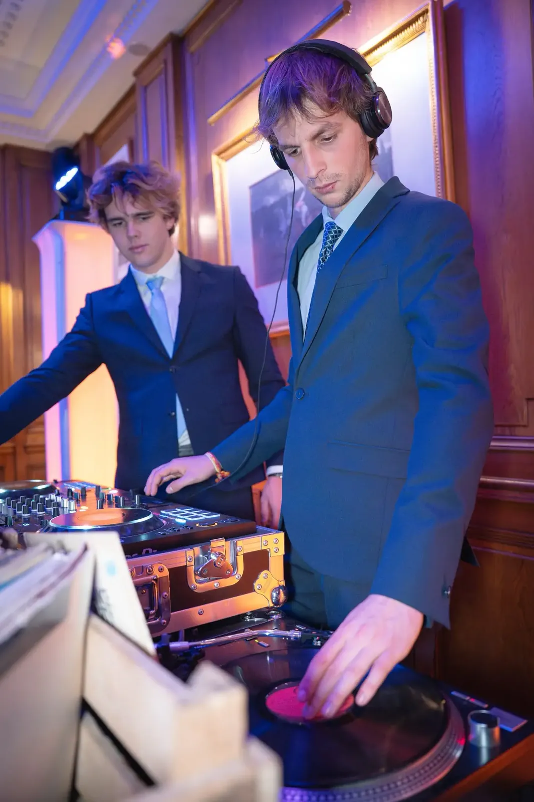

Sonorisation & DJ pour rallyes, galas et grandes jauges.
Spectre Events a démarré derrière les platines de grands rallyes et soirées étudiantes. Des façades L-Acoustics tenues, des basses SB118 précises et une mise en lumière pilotée en direct sur console DMX Wolfmix.
Une configuration club propre, même dans un lieu de réception
Un gala ou un grand rallye réclame l'énergie d'un système club sans transformer une belle salle ou un château en hangar industriel.
Façade L-Acoustics & basses SB118
Enceintes 12XT et caissons 18 pouces SB118 pilotés par amplification LA4 pour garder de l'impact dans le grave jusqu'au bout de la nuit sans saturer.
Plus de 600 pers.Scénographie lumière DMX Wolfmix
Lyres Wash sur totems stables et projecteurs PAR LED sur batterie pilotés en temps réel depuis la régie pour accompagner chaque temps fort du set.
Console DMX WolfmixRedondance & zéro temps mort
Installation achevée en avance, alimentation vérifiée et matériel de secours en régie pour garantir la continuité musicale toute la nuit.
Secours systématique


Questions fréquentes
Comment assurez-vous un son club sans coupure au-delà de 600 personnes ?
Nous dimensionnons la façade avec des enceintes L-Acoustics 12XT, des caissons de basses SB118 et des amplificateurs LA4 adaptés à la salle ou au chapiteau, en prévoyant systématiquement des éléments de secours et une régie montée plusieurs heures à l'avance.
Quel dispositif d'éclairage utilisez-vous sur les galas et rallyes ?
Nous associons des lyres Wash sur totems sobres, 8 projecteurs PAR LED sur batterie pour habiller l'architecture et un pilotage en direct sur console DMX Wolfmix pour synchroniser chaque montée et drop avec la musique.
Intervenez-vous partout en France pour les grands rallyes et galas ?
Oui. Nous avons assuré plus de 120 événements à Paris et dans toute la France (châteaux, domaines, hôtels particuliers, péniches et grandes salles) avec un devis gratuit sous 24 heures.
Vous organisez un rallye ou un gala ?
Précisez-nous la jauge attendue, la date et le lieu pour recevoir un devis détaillé sous 24 heures.